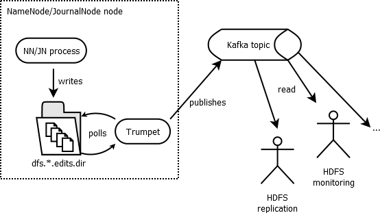

The strongest requirement behind this project is to be completely decoupled from the NameNode for reading the transactions and streaming them to multiple clients.
The selected approach is thus to read the edits log file directly from the local filesystem from either the NameNode or, more recommended, the JournalNode, and stream the interesting transactions into Kafka. Many clients might in turn read from Kafka the complete set of transactions. The process of reading the edits log is totally independent from the NameNode or JournalNode and thus non-intrusive at all. And of course, the Kafka cluster can be scaled out independently.
The 10K feet architecture diagram would look like this:

Poll the edit log directory
Trumpet aims at reading from outside the NameNode / JournalNode process. The easiest solution for that is to rely
on the Offline Edits Viewer,
or OEV to read the edits log files, just like Redo logs will be parsed in a
RDBMS world. The edits log directory is the traversed to find the latest edit log file and read the transaction from there.
This edits log directory is either given by the configuration option dfs.journalnode.name.dir (dfs.namenode.name.dir respectively
for the NameNode) or set in as a command line argument of Trumpet at startup (see installation), and is later
referred as dfs.*.name.dir.
Based on naming convention of the edits log dir (read more on hdfs metadata directory), it's straight forward to find the file containing a given transaction and resuming the read from this transaction. Hadoop source code provides all the primitive functions to achieve that in few lines of code.
Publish into Kafka
Kafka publisher-subscriber model is a good fit to push the transactions into and allow several clients to read from. In current implementation supports Kafka 0.8.2.1 and Kafka 0.8.1.1. While the choice is let to the user, it is recommended to use a topic with one single partition to guarantee consistent ordering of the transactions. This recommendation might change in the future though. Several replica are however strongly recommended.
Trumpet requires to have the topic created in advance. The default topic name is hdfs.inotify.events.
An example of topic creation would be:
- Kakfa 0.8.1
$ $KAFKA_HOME/bin/kafka-topic.sh --create --zookeeper <zk_ip:2181> --replication-factor 4 --partitions 1 --topic hdfs.inotify.events
- Kakfa 0.8.2-cp
$ kafka-topics --create --zookeeper <zk_ip:2181> --replication-factor 4 --partitions 1 --topic hdfs.inotify.events
Of course the scalability of the client applications reading the transactions will be influenced by the scalability of your Kafka cluster. Trumpet guarantees exactly once delivery of the HDFS event, but does not guarantee any transaction or reader persistence to the client application. This responsibility is delegated to the clients and most likely the Kafka consumer group.
Events as JSON Dictionary
INotify interface changed between Hadoop 2.6 and Hadoop 2.7. In order to provide compatibility across these different versions events are published in Kafka as simple JSON dictionary. In the client Java API, the event is retrieved back as a simple Map. See the section on writing client applications for more details about the events format.
Leader Election
Hadoop runs with HA in mind, and this project follows the same concept. Trumpet is designed to run alongside the JournalNode
(or NameNode) process, reading from the local dfs.*.name.dir directory. The idea is to run one Trumpet server process per
JournalNode, the processes running a leader election in Zookeeper using Curator
recipe to guarantee only one active process
at the same time. The processes are also monitoring the JournalNode process, releasing quickly the leadership
if the JournalNode process died.
Resume from previous run
Once a Trumpet server process become active (leader), it will find out from Kafka which was the latest published transaction,
resuming the operation from there (or, in case of prolonged downtime, resume with the first found transaction in
the local dfs.*.name.dir directory.
Rolling upgrade
In case of production usage of Trumpet, rolling upgrades need to be addressed. With its leader election feature, Trumpet rolling upgrade is as easy as upgrading one Trumpet worker at the time. A tool which tells you who are the Trumpet workers and which one is active is also provided, see the operations section.
In details, a rolling upgrade looks like: 1. stop Trumpet, 2. upgrade the JournalNode, 3. restart the JournalNode, 4. upgrade Trumpet, 5. restart Trumpet
Repeat for all the JournalNode/Trumpet instances.
Zookeeper separation
Zookeeper is a critical component of the Hadoop infrastructure, and it's common to split Zookeeper cluster, one for the infrastructure components, like Kafka, NameNode etc... and another Zookeeper for more user-space applications. In Trumpet, you can either use one Zookeeper cluster, or split the Zookeeper usages between Kafka discovery and leader election. Use:
--zk.connectif you have one Zookeeper cluster--zk.connect.kafkaand--zk.connect.userif you have two Zookeeper clusters.